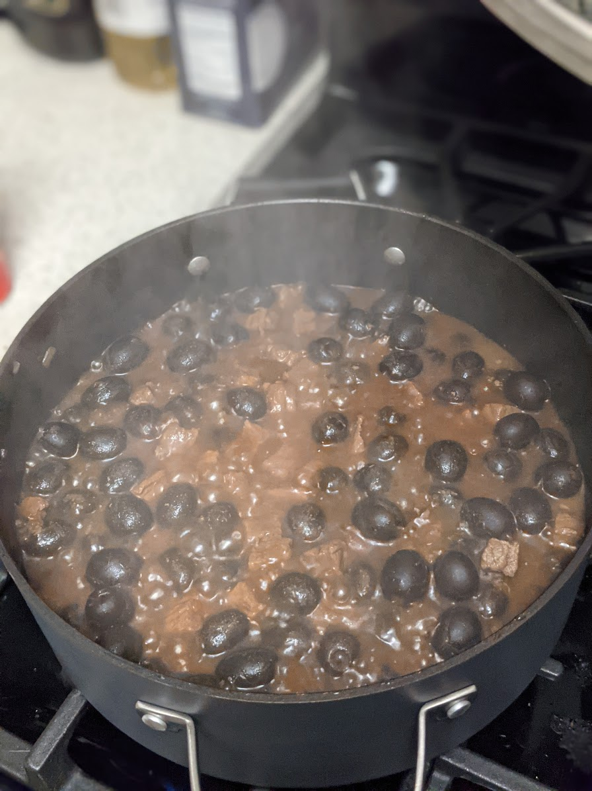

Beef and Olives

Description
About
Ingredients
- 2lbs Top round beef
3 cans of medium sized pitted olives
- 1 small yellow onion
- 4 garlic cloves
- 2 cups of soy sauce
- 1 cup of water
- 2 tbls of butter
- 1 pinch of salt
Instructions
- Dice onions and garlic
- Put onions and garlic in a large pot with butter and salt
at low heat to sweat
- Cut meet into 1 inch cubes
- When onions are transluscent turn up the heat to medium and place
meat in the pot to brown the meat thoroughly
- Add water and soy sauce, keep temp at medium low and let it cook for 20 mins
- Add the olives and mix, allow to cook for 2 hours, adding more water
and soy sauce if the levels get too low
- Serve over rice